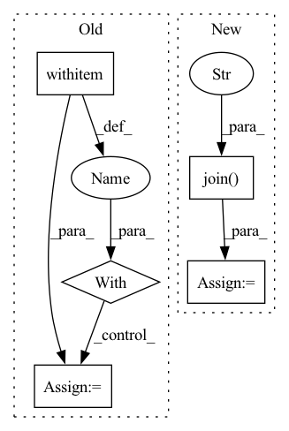

Pattern ID :35234
Before Change
// Create an index for the list of sections
self.embeddings.index([(uid, text, None) for uid, text in enumerate(self.data)])
with tempfile .NamedTemporaryFile(mode="wb") as output:
index = output.name
self.embeddings.save(index)
self.embeddings.load(index)After Change
self.embeddings.index([(uid, text, None) for uid, text in enumerate(self.data)])
// Generate temp file path
index = os.path.join( tempfile.gettempdir(), "embeddings" )
self.embeddings.save(index)
self.embeddings.load(index)
In pattern: SUPERPATTERN
Frequency: 4
Non-data size: 5
Instances Fragment ID: 100284578
Project Name: neuml/txtai
Commit Name: 5a5247e1d0f0d2cf56ccc4b232eeec3b032ce868
Time: 2020-08-21
Author: 561939+davidmezzetti@users.noreply.github.com
File Name: test/python/testembeddings.py
M Class Name: TestEmbeddings
N Class Name: TestEmbeddings
M Method Name: testSave(1)
N Method Name: testSave(1)
M Parent Class: unittest.TestCase
N Parent Class: unittest.TestCase
M File Name: test/python/testembeddings.py
N File Name: test/python/testembeddings.py
M Start Line: 54
M End Line: 57
N Start Line: 56
N End Line: 56
Before Change
Tests ANN save/load.
with tempfile .NamedTemporaryFile(mode="wb") as output:
index = output.name
model = self.backend("annoy")
model.save(index)After Change
// Generate temp file path
index = os.path.join( tempfile.gettempdir(), "ann" )
model = self.backend("annoy")
model.save(index)
model.load(index) Fragment ID: 100284579
Project Name: neuml/txtai
Commit Name: 5a5247e1d0f0d2cf56ccc4b232eeec3b032ce868
Time: 2020-08-21
Author: 561939+davidmezzetti@users.noreply.github.com
File Name: test/python/testann.py
M Class Name: TestANN
N Class Name: TestANN
M Method Name: testSave(1)
N Method Name: testSave(1)
M Parent Class: unittest.TestCase
N Parent Class: unittest.TestCase
M File Name: test/python/testann.py
N File Name: test/python/testann.py
M Start Line: 46
M End Line: 49
N Start Line: 47
N End Line: 47
Before Change
self.list_of_eligible_wave_paths = list(self.list_of_eligible_wave_paths)
self.waves = list()
for path in tqdm(self.list_of_eligible_wave_paths):
with open (path, "rb") as audio_file:
wave_orig, _ = sf.read(audio_file)
self.waves.append(self.preprocess_ap.audio_to_wave_tensor(wave_orig, normalize=True, mulaw=False))
print("{} eligible audios found".format(len(self.waves)))
After Change
self.waves.append(torch.tensor(wave))
torch.save(self.waves, os.path.join(cache_dir, "waves.pt"))
else:
self.waves = torch.load(os.path.join( cache_dir, "waves.pt" ) , map_location="cpu")
print("{} eligible audios found".format(len(self.waves)))
Fragment ID: 100284576
Project Name: digitalphonetics/ims-toucan
Commit Name: c762d97e04a62c8f3d839cc12c1f3c2b375bde9e
Time: 2021-10-28
Author: florian.lux@ims.uni-stuttgart.de
File Name: TrainingInterfaces/Spectrogram_to_Wave/HiFIGAN/HiFiGANDataset.py
M Class Name: HiFiGANDataset
N Class Name: HiFiGANDataset
M Method Name: __init__(6)
N Method Name: __init__(5)
M Parent Class: Dataset
N Parent Class: Dataset
M File Name: TrainingInterfaces/Spectrogram_to_Wave/HiFIGAN/HiFiGANDataset.py
N File Name: TrainingInterfaces/Spectrogram_to_Wave/HiFIGAN/HiFiGANDataset.py
M Start Line: 23
M End Line: 49
N Start Line: 17
N End Line: 54
Before Change
file_path = os.path.join(log_dir, camera_id, "objects_log", today + ".csv")
now = datetime.today()
violations = 0
with open (file_path, "r", newline="") as csvfile:
reader = csv.DictReader(csvfile)
for row in reader:
row_time = datetime.strptime(row["Timestamp"], "%Y-%m-%d %H:%M:%S")
if ((now - row_time).seconds / 60) < interval:After Change
violations = 0
if entity_type == "Camera":
file_paths = [os.path.join( log_dir, entity_info["id"], "objects_log" , today + ".csv") ]
else:
// entity_type == "Area"
camera_ids = entity_info["cameras"] Fragment ID: 100284577
Project Name: neuralet/smart-social-distancing
Commit Name: cc83a5359249689566aff454deb74f361ee3c432
Time: 2020-10-23
Author: 42361379+renzodgc@users.noreply.github.com
File Name: libs/utils/notifications.py
M Class Name: AnonimousClass
N Class Name: AnonimousClass
M Method Name: check_violations(7)
N Method Name: check_violations(7)
M Parent Class:
N Parent Class:
M File Name: libs/utils/notifications.py
N File Name: libs/utils/notifications.py
M Start Line: 11
M End Line: 32
N Start Line: 23
N End Line: 46